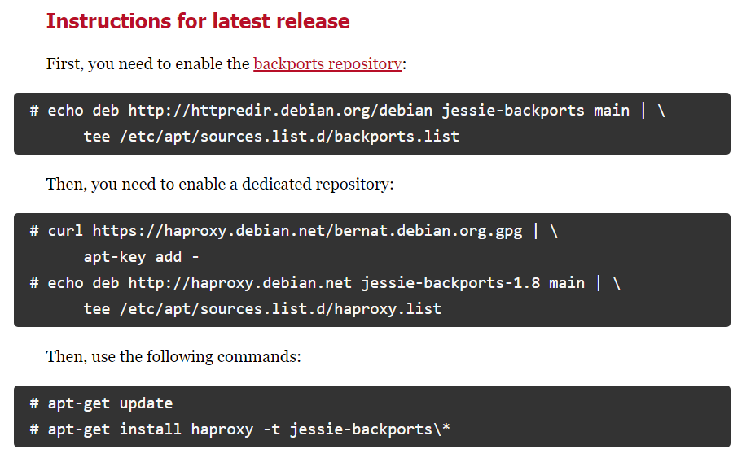

В Creatio существует возможность повысить производительность крупных проектов (до нескольких тысяч пользователей) за счет горизонтального масштабирования — увеличения количества серверов, на которых развернуто приложение, и распределения нагрузки между ними.
Балансировщик может быть аппаратным или программным. Для работы в отказоустойчивом режиме используется балансировщик HTTP/HTTPS-трафика с поддержкой протокола WebSocket. Работа приложения тестировалась на программном балансировщике нагрузки HAProxy. Известны случаи успешного использования других балансировщиков Citrix, Cisco, NginX, FortiGate, MS ARR.
Данный документ рассматривает вариант горизонтального масштабирования Creatio с иcпользованием бесплатного open-source балансировщика HAProxy для распределения нагрузки на серверы сессий.
Общий порядок развертывания
Для приложений на .NET Framework
Общий порядок развертывания приложения Creatio с горизонтальным масштабированием на .NET Framework следующий:
-
Разверните необходимое количество экземпляров приложения Creatio в web-ферме.
-
В файле ConnectionStrings.config для всех экземпляров укажите одинаковые базы данных SQL и Redis.
-
В конфигурационном файле (Web.config) каждого приложения, в блоке <appSettings> добавьте ключ:
Номер “value” должен быть одинаковым у всех экземпляров приложения в web-ферме.
- Сгенерируйте для одного из экземпляров приложения уникальное значение machineKey. Подробно об этом читайте в статье Настроить Web.config. Полученное значение скопируйте и укажите для каждого экземпляра приложения в конфигурационных файлах Web.config, которые находятся в корневой папке Creatio и в папке Terrasoft.WebApp.
-
Во внешнем конфигурационном файле (Web.config) каждой ноды для всех планировщиков в блоке <quartzConfig> включите кластерный режим:
-
В случае совпадения настроек instanceId сформируйте уникальные значения для каждой ноды планировщиков.
Способы формирования уникальных instanceId:
-
Во внешнем конфигурационном файле (Web.config) каждой ноды для всех планировщиков в блоке <quartzConfig> добавьте строку
В результате планировщик автоматически будет генерировать уникальное имя ноды в формате <имя ноды>+timestamp.
- Вручную добавьте уникальные значения quartz.scheduler.instanceId.
-
-
Для атрибута value настройки quartz.jobStore.clustered установите значение true.
- Раздайте права на созданные директории приложений пользователю IUSR и пользователю, под которым запущен Application pool в IIS.
- Настройте балансировщик (например, HAproxy) для распределения нагрузки между развернутыми серверами приложения.
-
При необходимости настройте балансировку нагрузки для серверов баз данных и сессий.
Для приложений на .NET Core
Общий порядок развертывания приложения Creatio с горизонтальным масштабированием на .NET Core следующий:
- Разверните необходимое количество экземпляров приложения Creatio.
- В файле ConnectionStrings.config для всех экземпляров укажите одинаковые базы данных SQL и Redis для всех экземпляров приложения.
- Перейдите в корневую папку любого из экземпляров приложения и найдите файл Terrasoft.WebHost.dll.
-
Запустите команду:
В результате конфигурационные файлы данного экземпляра приложения обновятся.
-
Во внешнем конфигурационном файле (Terrasoft.WebHost.dll) каждой ноды для всех планировщиков в блоке <quartzConfig> включите кластерный режим:
-
В случае совпадения настроек instanceId сформируйте уникальные значения для каждой ноды планировщиков.
Способы формирования уникальных instanceId:
-
Во внешнем конфигурационном файле (Terrasoft.WebHost.dll) каждой ноды для всех планировщиков в блоке <quartzConfig> добавьте строку
В результате планировщик автоматически будет генерировать уникальное имя ноды в формате <имя ноды>+timestamp.
- Вручную добавьте уникальные значения quartz.scheduler.instanceId.
-
-
Для атрибута value настройки quartz.jobStore.clustered установите значение true.
- При необходимости настройте балансировку нагрузки для серверов баз данных и сессий.
- Скопируйте все обновленные конфигурационные файлы в корневые папки других экземпляров приложения.
- Настройте балансировщик (например, HAproxy) для распределения нагрузки между развернутыми серверами приложения.
Установить балансировщик HAProxy
Балансировщик нагрузки HAProxy поддерживает ряд бесплатных open-source ОС. В данном документе мы рассмотрим один из наиболее простых способов развертывания HAProxy на ОС Debian при помощи сервиса haproxy.debian.net.
- Откройте страницу сервиса установки, перейдя по ссылке https://haproxy.debian.net/.
-
Выберите ОС и ее версию, а также версию HAProxy.
В результате сервис сгенерирует набор команд, которые необходимо выполнить в ОС Debian для установки HAProxy.
Рис. 1 — Пример команд установки HAProxy, сгенерированных сервисом haproxy.debian.net - Выполните сгенерированные команды одну за другой.
Настроить балансировщик HAProxy
Для настройки HAProxy необходимо внести изменения в файл haproxy.cfg. Файл находится по следующему пути:
Основные (минимальные) настройки
Минимальные настройки, необходимые для работы HAProxy, состоят в добавлении в файл двух секций: frontend и backend.
Секция frontend
В секцию frontend необходимо добавить 2 настройки: bind и default_backend:
- В настройке bind укажите адрес и порт, на который будут поступать запросы, распределение которых будет производить HAProxy.
- В опции default_backend укажите имя, которое будет указано для секции backend.
В результате настройка будет выглядеть следующим образом:
Секция backend
В секцию backend необходимо добавить как минимум 2 обязательные настройки:
- В параметре balance укажите тип балансировки, например roundrobin. Информация о различных типах балансировки доступна в документации HAProxy.
- При помощи параметра server укажите все серверы (или “nodes”), между которыми должна распределяться нагрузка.
Для каждого сервера (развернутого экземпляра приложения Creatio) необходимо добавить отдельный параметр server с указанием адреса сервера, порта и веса. Вес позволяет балансировщику распределять нагрузку на основании физических возможностей серверов. Чем больший вес указан для сервера, тем больше запросов он будет получать. Например, если необходимо распределить нагрузку между двумя серверами Creatio, добавьте в backend 2 параметра server:
В результате настройка будет выглядеть следующим образом:
Новые настройки вступят в силу после перезапуска HAProxy. Используйте следующую команду для перезапуска HAProxy:
Проверить состояние сервера
С точки зрения балансировщика HAProxy у сервера может быть несколько состояний:
| Состояние | Описание |
|---|---|
| UP | Сервер работает. |
| UP - transitionally DOWN | Сервер в настоящий момент считается работоспособным, но последняя проверка не удалась. Следовательно, сервер переходит в состояние DOWN. |
| DOWN - transitionally UP | В настоящее время сервер считается неработоспособным, но последняя проверка прошла успешно. Следовательно, сервер переходит в состояние UP. |
| DOWN | Сервер не работает. |
Изменения рабочего состояния инициируются параметрами проверки работоспособности (health check). Для самой простой проверки работоспособности необходимо ключевое слово check в строке настройки server. Для запуска проверки работоспособности требуется как минимум IP-адрес и порт TCP от сервера. Пример проверки:
Настроить веб-статистику (опционально)
Чтобы включить веб-статистику, добавьте новую секцию listen со следующими параметрами: bind, mode http, stats enable, stats uri. Секция выглядит следующим образом:
В результате веб-статистика балансировки нагрузки Creatio будет доступна для просмотра в браузере.
Для просмотра статистики перейдите по адресу: адрес балансировщика:9000/haproxy_stats.
Настроить отображение IP-адресов в журнале аудита для .Net Core (опционально)
При работе веб-фермы запросы пользователей приходят на веб-серверы через балансировщик и/или прокси-сервер. В этом случае по умолчанию в журнале аудита будет отображаться адрес последнего из прокси-серверов, через которые прошел запрос пользователя, а не его IP-адрес.
Вы можете настроить отображение в журнале аудита реального IP-адреса пользователя. Для этого:
- Настройте балансировщик таким образом, чтобы каждому запросу, который он перенаправляет на один из экземпляров приложения, был установлен заголовок, имя которого соответствует "ForwardedForHeaderName", а значение — IP-адресу клиента.
-
Внесите изменения в конфигурационные файлы приложений.
- Откройте файл appsettings.json, который находится в корневой папке приложения.
-
Отредактируйте блок "ForwardedHeaders":
Где:
"Enable" — включение функции обработки Forwarded headers в веб-приложении;
"ForwardedForHeaderName" — имя заголовка, из которого будет получен IP-адрес;
"KnownProxiesIP" — список доверенных IP-адресов, при получении запроса от которых будет происходить обработка значения "ForwardedHeader". Например, это может быть адрес балансировщика, reverse proxy и т. д. Если это значение не заполнено, то обработка ForwardedHeader будет выполняться для всех IP-адресов, с которых приходят запросы.
- Повторите шаги a–b для всех экземпляров приложения, которые входят в веб-ферму.